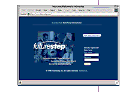

|  |
Creating a new brand for executive recruitment. When Korn/Ferry International, the world's largest executive search firm, decided to go on-line in order to capture a new segment of job seekers for their clients, they enlisted Frankfurt Balkind Partners to create, service, and manage the brand from the ground up.
The target audience-working management-level professionals, who are by definition passive job seekers-represented an untapped, untested and difficult- to-reach market.
Frankfurt Balkind, through extensive research and strategic planning, helped Korn/Ferry conceive the product, both in terms of function and style, to name it, to build it, and then to communicate it through interactive and print advertising-all within an accelerated time frame of less than two months.